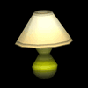
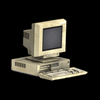

La que sigue es una lista de todas las fuentes de luz que se pueden hallar en
los salones de clase:
 Ventanas
Ventanas
Fácilmente visibles, aun en la oscuridad, las ventanas pueden ser rotas con los
perdigones de la honda o las bombas. Cuando se rompen, iluminan todo el cuarto.
Las Ventanas no se pueden reparar y su luz permanece indefinidamente en todos
los cuartos de rompecabezas. Las ventanas no contribuyen al Medidor de Luz
ya que no usan electricidad.
Lámpara
La lámpara puede ser prendida o apagada, creando un círculo de luz mediano a su
alrededor. Cada lámpara debe ser prendida o apagada individualmente.
 Televisor
Televisor
El televisor no se puede encender directamente. El jugador debe encontrar el
control remoto de la TV para prenderlo. La televisión crea un orbe de luz
frente a la pantalla. Cuando hay varios televisores en un cuarto, el control
remoto pasa de uno a otro.
Pantallas
de PC
Las pantallas de las computadoras están enlazadas a una red. Al encender una
pantalla se encienden todas las del cuarto, y lo mismo al apagar una. Por esta
razón, las pantallas llenan el Medidor de Luz muy rápidamente. Las Pantallas de
los PC tienden a provocar cortos circuitos. Si la luz de la pantalla empieza a
centellear, el jugador debe alejarse para prevenir quedarse en la oscuridad.
Solamente una pantalla hará corto circuito a la vez, y cualquier pantalla que
hace corto circuito se encenderá de nuevo en unos cuantos segundos.
 Luz
Oscilante
Luz
Oscilante
La luz oscilante opera igual que un abanico de mesa. Rota de un lado para otro
despacio y por unos segundos en cada ciclo, antes de ir en la dirección
opuesta. La luz oscilante crea un gran haz de luz en forma similar a la
linterna de Jake, la cual se puede iluminar a través del cuarto. Cuando la luz
oscilante se apaga, vuelve a empezar su rotación desde el mismo punto cuando se
prende de nuevo.
 Sensor
de Movimiento
Sensor
de Movimiento
El sensor de movimiento crea un gran círculo de luz bajo él cuando Jake o un
proyectil se acerca a unos cuantos pies. Una vez activado, su luz permanecerá
encendida por 10 segundos antes de que empiece a centellear y se apague. Una
vez que el sensor se apague puede ser reactivado; pero no se puede mantener
encendido por más de 10 segundos continuos.